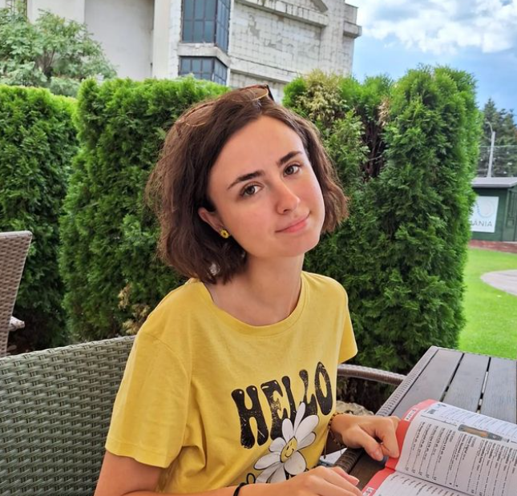

Anto's Amazing Resume

Summary
Very dedicated and hard working student, with a passion for learning fueled by unmatched curiosity!
Education
- The National College "Constantin Carabella" Targoviste
- Ongoing at Transilvania University of Brasov, Computer Science Faculty
Work Experience
- Intern at NTT Data Brasov, Embedded Technologies branch
Skills
- Experience with the following programming languages: C, C++, C#, Java
- Great communicator
Awards
- ECDL certificate
- Cambridge Certificate (C2)
For further information, please visit the following sites:
- Contact Anto
- Find out more about her!